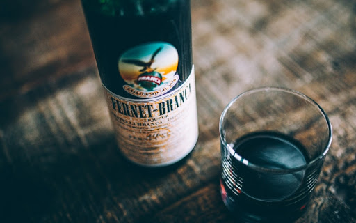
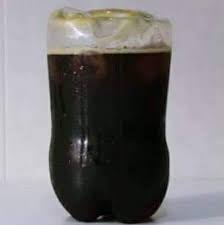

El fernet fue llevado a la Argentina por los inmigrantes italianos, que la consumian como aperitivo y digestivo. Pronto se extendio su consumo junto a copetines, combinado con agua, soda, vermu rojo o en cocteles; en la actualidad el mas apreciado es el que resulta de se combinarlo con gaseosa sabor a cola. La empresa Fratelli Branca Distillerie, creadora y duenia del fernet, reconocio en una revista que la mezcla de esa bebida se invento en la provincia argentina de Cordoba. Tras un recorrido del actual presidente y administrador de la compania, Niccolo Branca, por Buenos Aires, en una entrevista reconoce que "en Argentina, Branca es casi un mito" y que el fernet con coca es como una "bebida nacional que se comparte en las noches del portenio barrio de Palermo, en los bares de plaza Serrano y en todo el pais, de sur a norte". Ademas, asegura que "en Cordoba es donde nacio el "fernandito", tal como le llaman cariniosamente a la mezcla.
Se recomienda que las bebidas a utilizar se encuentren refrigeradas para lograr una mejor espuma

Para un mejor sabor de la preparacion se recomienda
utilizar como recipiente para prepararlo y beberlo
una botella de plastico cortada con cuchillo.